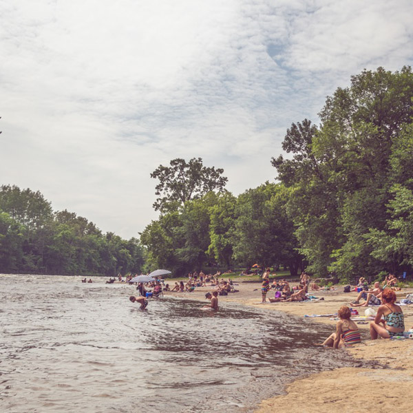

Filter These Items
View the Code on Github
View By Content:
all
image
text
View By Shape:
all
circle
square
View By Colour:
all
dark-berry
light-berry
moody-berry
baby-blue
subtle-blue
Current Filter:
